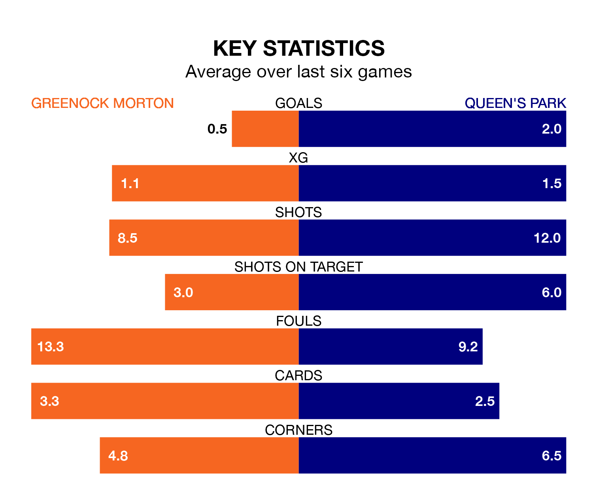

Struggling Queen's Park face Greenock Morton away at Cappielow Park on Saturday looking to build on a win in their last league outing.
After securing all three points with a 2-1 victory over Ayr United on March 23, the Spiders sit seventh in the Championship.
They travel to play a Greenock Morton side sixth in the standings, who lost in their last match, 1-0 against Dunfermline Athletic.
In Ruari Paton, Queen's Park have one of the league's most on-form strikers so far this season. He has notched 16 goals in 30 appearances, to sit second in the scoring charts.
His goal rate of one every 167 minutes is quicker than that of Robbie Muirhead, Greenock Morton's top scorer with a goal every 225 minutes, and a total of 10 goals in 26 games.
With 35 goals in 29 games so far this season, the Ton are scoring at below the league average rate with 1.2 goals per game. But they are conceding fewer than average too, letting in 34 goals at a rate of 1.2 per game.
The Spiders, meanwhile, are average scorers, with 1.4 goals per game. They have conceded 1.6 goals per game.
In the last 10 years, Greenock Morton and Queen's Park have played each other on 10 occasions. Greenock Morton won five of them, Queen's Park one, and they drew four times.
On average, the Ton scored 1.3 goals and the Spiders 1.0 in those matches.
Their last meeting was on February 17, when they played out a 0-0 draw.
The hosts are in bad form in the Championship, with one win and a draw from their last six games.
With two wins and three draws over that period, the away side's form is better – they have taken nine points from 18, compared to Greenock Morton's four.
Updated: 12:39 (UTC), 26/03/24